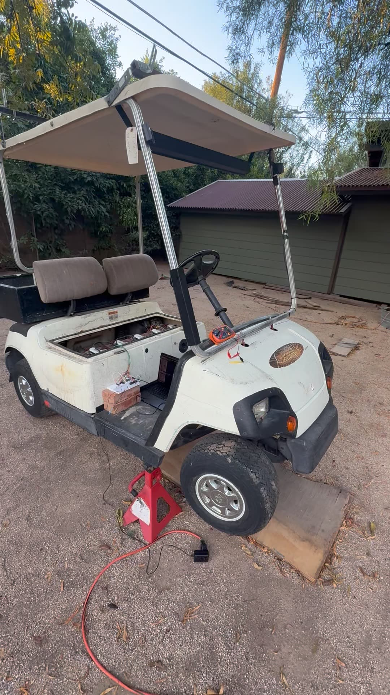
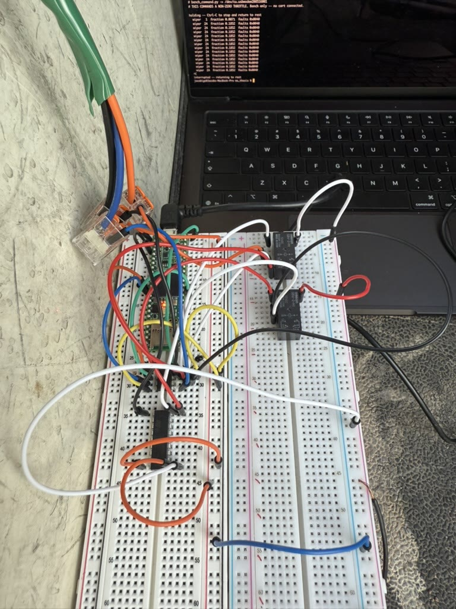
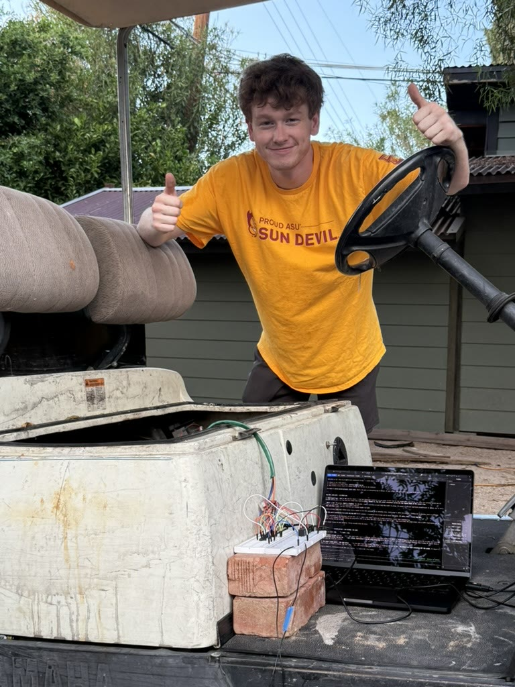

Relay power cut
Cutting relay power drops the throttle injection and hands the throttle back to the stock pedal circuit. No software is involved.
A low-cost drive-by-wire research platform for sim-to-real autonomy
Arizona State University
MS Computer Science Thesis - Work in Progress
Self-driving research vehicles are expensive, and most of them are closed. This project turns a used Yamaha G22E electric golf cart into an autonomous research platform built from off-the-shelf parts. It adds a software-controlled drive-by-wire layer to the cart without changing how it drives for a person behind the wheel.
The cart is the physical end of a graduate research project on moving autonomy software from simulation onto real hardware. Everything below is the platform that work runs on.
A strict split keeps the safety-critical parts simple. Linux computers are fast on average but can stall unpredictably, so the Linux computer only plans. A bare-metal microcontroller handles every electrical connection to the cart and enforces limits. Relays sit underneath everything and fall back to stock wiring whenever power is lost.
The relay cut and the watchdog were both proven on the bench before going on the cart. On the cart, all three failsafes were triggered while the wheels were spinning under software command, and each one stopped them. That was also the first time the accelerator interlock had been tested at all.
Cutting relay power drops the throttle injection and hands the throttle back to the stock pedal circuit. No software is involved.
Pulling the USB cable mid-command sets off the microcontroller's hardware watchdog, which returns the throttle to rest.
A safety operator holds the accelerator switch closed. When they let go, the stock controller stops the cart, whatever the software is commanding.



Hardware comes up one step at a time. Each stage adds one real component to the loop and has to pass before the next one starts.
A simulated serial link and a record-and-replay roundtrip, with no hardware attached.
The link works, using a custom binary protocol with CRC framing. Fault handling, including the hardware watchdog, was measured on the real board. The remaining fault cases can only be tested in later stages.
The microcontroller drives the digital potentiometer, checked against a meter. First end-to-end command from ROS to the output.
A resistor rig simulated the cart's controller on the bench, and every acceptance criterion was measured and passed.
With the cart on jackstands, the wheels turned under software command. All three failsafes stopped them mid-motion, and afterward the cart was put back to stock.
Closed-loop speed control on jackstands, then centimeter-level positioning at the test site. Both are required before the cart moves under its own control.
Steering and brake actuators, a hardwired e-stop, and then the full autonomy stack on the cart.
This is a research platform tested on private property, with a safety operator present and speeds capped. It is not intended for public roads. All testing to date has been done with the drive wheels off the ground.